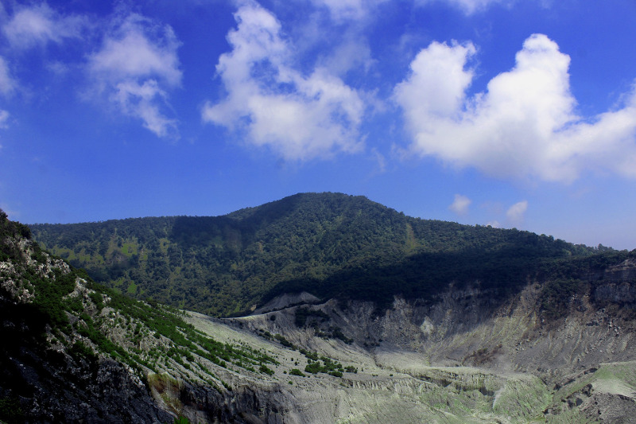

Bandung
Bandung merupakan ibu kota Provinsi Jawa Barat. Kota ini dikenal sebagai Kota Kembang dan memiliki banyak tempat wisata serta berbagai macam kuliner.
Sejarah Bandung

Bandung memiliki sejarah yang panjang dan berkembang menjadi salah satu kota penting di Jawa Barat. Kota ini juga memiliki banyak bangunan dan tempat bersejarah yang masih dapat dikunjungi hingga sekarang.
Geografis Bandung

Bandung berada di wilayah Jawa Barat dan dikelilingi oleh pegunungan. Kondisi geografis tersebut membuat Bandung memiliki udara yang relatif sejuk.
Tempat Wisata